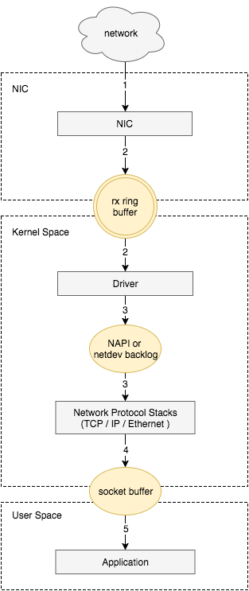
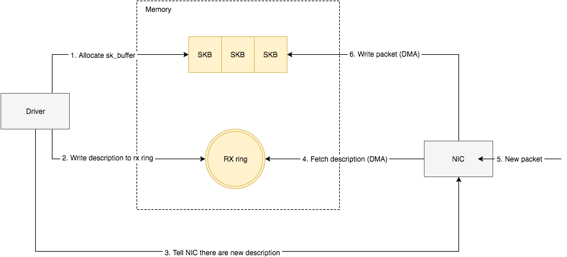
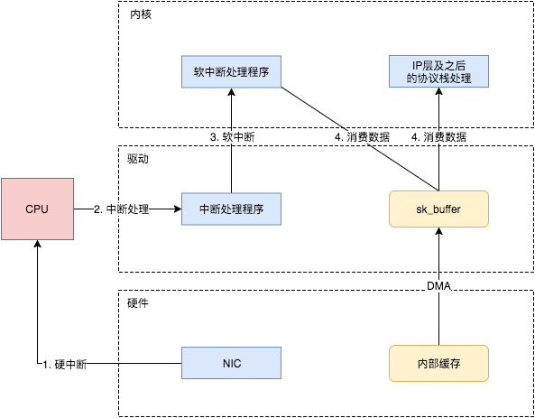
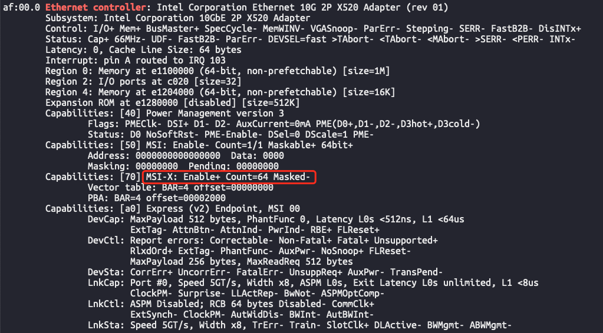
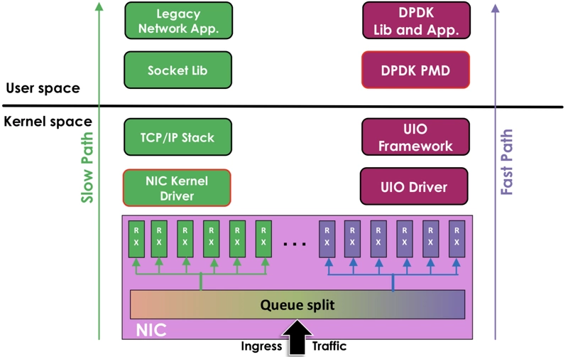
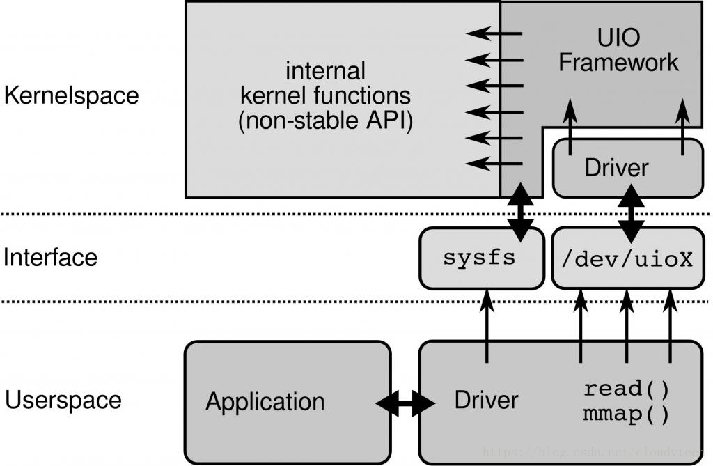
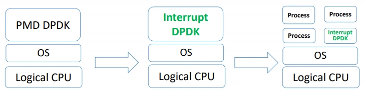

接收数据包流程

接收数据包是一个复杂的过程，涉及很多底层的技术细节，但大致需要以下几个步骤：
- 网卡收到数据包
- 将数据包从网卡硬件缓存转移到服务器内存中
- 通知内核处理
- 经过TCP/IP协议逐层处理
- 应用程序通过
read()从socket buffer读取数据
将网卡收到的数据包转移到主机内存（NIC与驱动交互）

NIC在接收到数据包之后，首先需要将数据同步到内核中，这中间的桥梁是rx ring buffer。它是由NIC和驱动程序共享的一片区域，事实上，rx ring buffer存储的并不是实际的packet数据，而是一个描述符，这个描述符指向了它真正的存储地址，具体流程如下：
- 驱动在内存中分配一片缓冲区用来接收数据包，叫做
sk_buffer； - 将上述缓冲区的地址和大小（即接收描述符），加入到
rx ring buffer。描述符中的缓冲区地址是DMA使用的物理地址； - 驱动通知网卡有一个新的描述符；
- 网卡从
rx ring buffer中取出描述符，从而获知缓冲区的地址和大小； - 网卡收到新的数据包；
- 网卡将新数据包通过DMA直接写到
sk_buffer中。
当驱动处理速度跟不上网卡收包速度时，驱动来不及分配缓冲区，NIC接收到的数据包无法及时写到sk_buffer，就会产生堆积，当NIC内部缓冲区写满后，就会丢弃部分数据，引起丢包。这部分丢包为rx_fifo_errors，在/proc/net/dev中体现为fifo字段增长，在ifconfig中体现为overruns指标增长。
通知系统内核处理（驱动与Linux内核交互）
这个时候，数据包已经被转移到了sk_buffer中。前文提到，这是驱动程序在内存中分配的一片缓冲区，并且是通过DMA写入的，这种方式不依赖CPU直接将数据写到了内存中，意味着对内核来说，其实并不知道已经有新数据到了内存中。那么如何让内核知道有新数据进来了呢？答案就是中断，通过中断告诉内核有新数据进来了，并需要进行后续处理。
提到中断，就涉及到硬中断和软中断，首先需要简单了解一下它们的区别：
- 硬中断： 由硬件自己生成，具有随机性，硬中断被CPU接收后，触发执行中断处理程序。中断处理程序只会处理关键性的、短时间内可以处理完的工作，剩余耗时较长工作，会放到中断之后，由软中断来完成。硬中断也被称为上半部分。
- 软中断： 由硬中断对应的中断处理程序生成，往往是预先在代码里实现好的，不具有随机性。（除此之外，也有应用程序触发的软中断，与本文讨论的网卡收包无关。）也被称为下半部分。
当NIC把数据包通过DMA复制到内核缓冲区sk_buffer后，NIC立即发起一个硬件中断。CPU接收后，首先进入上半部分，网卡中断对应的中断处理程序是网卡驱动程序的一部分，之后由它发起软中断，进入下半部分，开始消费sk_buffer中的数据，交给内核协议栈处理。

通过中断，能够快速及时地响应网卡数据请求，但如果数据量大，那么会产生大量中断请求，CPU大部分时间都忙于处理中断，效率很低。为了解决这个问题，现在的内核及驱动都采用一种叫NAPI（new API）的方式进行数据处理，其原理可以简单理解为 中断+轮询，在数据量大时，一次中断后通过轮询接收一定数量包再返回，避免产生多次中断。
多CPU下的Ring Buffer处理
网卡收到收据产生的硬中断只能被一个 CPU 处理，从而只有一个 CPU 会出发后续的软中断，触发这个软中断的还是同一个 CPU。
从上面描述能看出来分配给 Ring Buffer 的空间是有限的，当收到的数据包速率大于单个 CPU 处理速度的时候 Ring Buffer 可能被占满，占满之后再来的新数据包会被自动丢弃。而现在机器都是有多个 CPU，同时只有一个 CPU 去处理 Ring Buffer 数据会很低效，这个时候就产生了叫做 Receive Side Scaling(RSS) 或者叫做 multiqueue 的机制来处理这个问题。
如果支持 RSS 的话，NIC 会为每个队列分配一个 IRQ，通过 /proc/interrupts 能进行查看。你可以通过配置 IRQ affinity 指定 IRQ 由哪个 CPU 来处理中断。先通过 /proc/interrupts 找到 IRQ 号之后，将希望绑定的 CPU 号写入 /proc/irq/IRQ_NUMBER/smp_affinity，写入的是 16 进制的 bit mask。比如看到队列 rx_0 对应的中断号是 41 那就执行：
1 | echo 6 > /proc/irq/41/smp_affinity |
另外需要注意的是设置 smp_affinity 的话不能开启 irqbalance 或者需要为 irqbalance 设置 –banirq 列表，将设置了 smp_affinity 的 IRQ 排除。不然 irqbalance 机制运作时会忽略你设置的 IRQ affinity 配置。
RSS
receive-side scaling，多队列 NIC 提供多个发送和接收队列，允许将 NIC 接收的数据包分配到其接收队列之一。NIC 可以使用散列函数在接收队列之间分配传入流量。每个接收队列都分配给一个单独的中断；通过将每个中断路由到不同的CPU或CPU 内核，可以分布式处理由单个 NIC 接收的网络流量触发的中断请求，从而提高性能。
RPS
Receive Packet Steering，采用软件模拟的方式，实现了多队列网卡所提供的功能，分散了在多CPU系统上数据接收时的负载, 把软中断分到各个CPU处理，而不需要硬件支持，大大提高了网络性能。
RFS
Receive Flow Steering，它是用来配合RPS补丁使用的，是RPS补丁的扩展补丁，RPS 是将收到的 packet 发配到不同的 CPU 以实现负载均衡，但是可能同一个 Flow 的数据包正在被 CPU1 处理，但下一个数据包被发到 CPU2，会降低 CPU cache hit 比率并且会让数据包要从 CPU1 发到 CPU2 上。RFS 就是保证同一个 flow 的 packet 都会被路由到正在处理当前 Flow 数据的 CPU，从而提高 CPU cache 比率。
检查网卡是否支持多队列
检查是否存在 MSI-X: Enable+ Count >0，如果存在，说明网卡支持多队列，count 为网卡支持队列数

DPDK
DPDk核心思想
- 用户态网络驱动：使用Linux的UIO技术，PMD批量收发数据，避免终端爆炸；线程绑定CPU core，避免调度开销；避免内核态和用户态的数据拷贝；用户态程序的稳定性更好
- 高效内存使用：使用大页减少TLB cache miss，高效的m_buf管理，使得多种网络处理更高效
- 环形队列：提供无锁队列，提高信息交互效率
- 向量化指令：提升内存读取效率，分摊指令开销

- 左侧是内核协议栈处理方式：网卡 -> 网卡驱动 -> 协议栈 -> Socket接口 -> 业务进程
- 右侧是DPDK的网络包处理方式，基于UIO旁路技术：网卡 -> UIO -> DPDK PMD -> DPDK基础库 -> 业务进程
UIO
Userspace I/O，指的是运行在用户空间的I/O技术，是实现用户空间下驱动程序的支撑机制。Linux系统中一般的驱动设备都是运行在内核空间，在用户空间用应用程序调用即可；而UIO则是将驱动的很少一部分运行在内核空间，而在用户空间实现驱动的绝大多数功能。使用UIO可以避免设备的驱动程序需要随着内核的更新而更新的问题。

Linux提供UIO机制。使UIO可以通过read感知中断，通过mmap实现和网卡的通讯
PMD
DPDK的UIO驱动屏蔽了硬件发出中断，然后在用户态采用主动轮询的方式，这种模式被称为PMD（Poll Mode Driver）
UIO旁路了内核，主动轮询去掉硬中断，DPDK从而可以在用户态做收发包处理。带来Zero Copy、无系统调用的好处，同步处理减少上下文切换带来的Cache Miss

运行在PMD的Core会处于用户态CPU100%的状态。网络空闲时CPU长期空转，会带来能耗问题。所以，DPDK推出Interrupt DPDK模式（注意：DPDK使用的是轮询模式）
它的原理和NAPI很像，就是没包可处理时进入睡眠，改为中断通知。并且可以和其他进程共享同个CPU Core，但是DPDK进程会有更高调度优先级